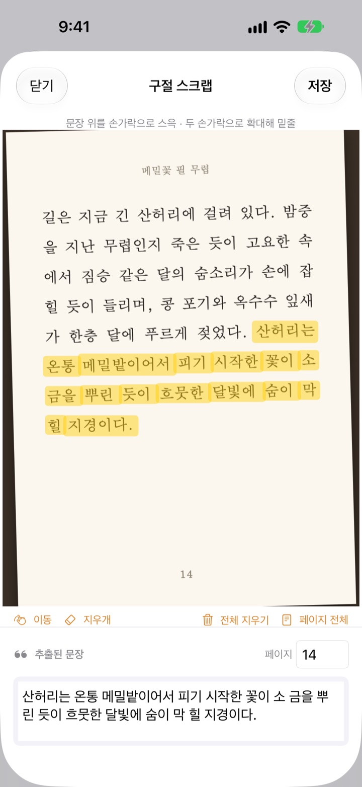
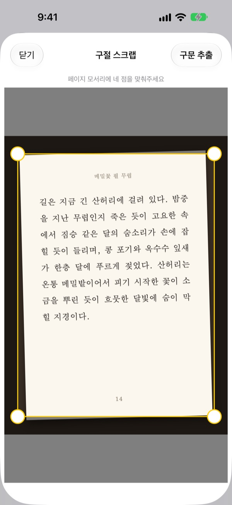
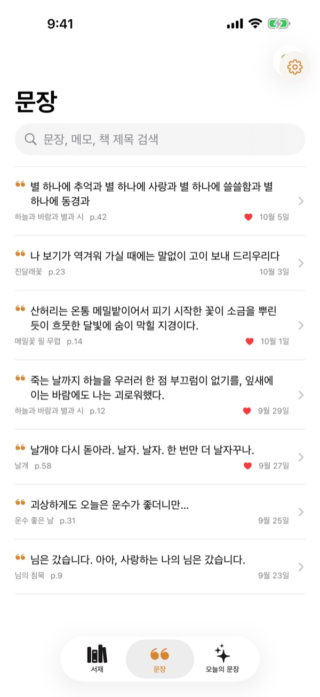
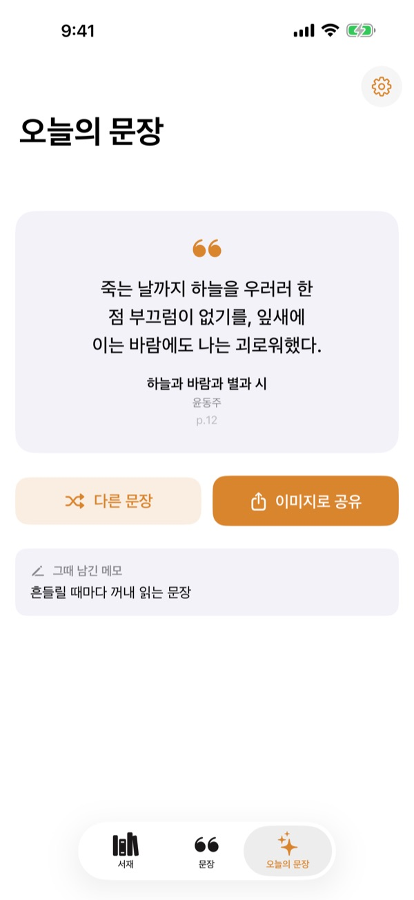

펜 없이 긋는
책 속의 밑줄
페이지를 찍고 마음에 드는 문장 위를 손가락으로 슥 문지르면, 그 문장만 글자로 옮겨 담아요. 무슨 책 몇 쪽인지도 함께 남아요.
모든 기능이 무료이고 광고가 없어요.

직접 그어 보세요
아래 페이지에서 마음에 드는 문장 위를 손가락이나 마우스로 문질러 보세요. 그은 단어만 오른쪽 카드에 담겨요.
좋은 문장을 만나면 어떻게 남겨 두나요?
빌린 책이라 줄을 그을 수 없고, 사진으로 찍어 두면 앨범 속 수천 장 사이에 묻혀요. 메모 앱에 옮겨 적다 보면 무슨 책 몇 쪽이었는지는 빠지기 일쑤고요. 밑줄은 찍고 긋는 두 번의 손짓으로 문장과 책, 쪽수를 한 번에 남겨요.
비스듬히 찍어도 반듯하게
페이지를 찍은 뒤 네 모서리를 맞추면 비스듬한 사진도 종이처럼 반듯하게 펴서 담아요. 글자가 또렷해져 인식도 정확해져요.
앨범에 있는 사진으로도 할 수 있어요.

모은 문장은 한곳에서 찾아요
책은 표지 서재에, 문장은 한 목록에 모여요. 문장, 메모, 책 제목으로 검색하고, 다시 읽고 싶은 문장은 하트로 즐겨찾기 해 두세요.
책은 표지 한 장으로 등록해요. 제목과 저자를 읽어 오고, 뒤표지 바코드가 보이면 ISBN도 채워요.

잊고 있던 문장을 다시 만나요
오늘의 문장이 매일 스크랩 하나를 그때 남긴 메모와 함께 다시 꺼내 보여 줘요. 홈 화면과 잠금 화면 위젯으로 늘 곁에 둘 수 있어요.
마음에 들면 종이 느낌의 카드 이미지로 만들어 바로 공유하세요.

시작은 세 단계면 돼요
- 1
표지를 찍어요
제목과 저자를 읽어 와요. 저장하기 전에 고칠 수 있어요.
- 2
페이지를 찍어요
네 모서리를 맞추면 반듯하게 펴져요.
- 3
문장 위를 그어요
쪽수도 알아서 찾아 함께 저장해요.
밑줄 긋는 화면의 도구
- 손가락으로 문지르기
- 지나간 단어만 골라요
- 두 손가락 벌리기
- 페이지를 확대해 더 정확하게 그어요
- 이동
- 확대한 페이지를 손가락으로 옮겨요
- 지우개
- 문지른 단어를 선택에서 빼요
- 전체 지우기
- 고른 단어를 모두 지워요
- 페이지 전체
- 페이지의 글을 통째로 담아요
- 페이지 칸
- 찾은 쪽수가 들어가요. 직접 고칠 수 있어요
VoiceOver를 쓰면 줄마다 두 번 탭해서 밑줄을 긋거나 지울 수 있어요.
모든 기능이 무료예요
무료
- 표지로 책 등록, 바코드로 ISBN 채우기
- 페이지 반듯하게 펴기와 손가락 밑줄
- 쪽수 자동 찾기
- 서재, 문장 검색, 즐겨찾기
- 오늘의 문장과 홈 화면, 잠금 화면 위젯
- 카드 이미지로 공유
- iCloud 동기화
개발자 응원하기
- 설정에서 원하는 만큼 작은 팁을 보낼 수 있어요
- 팁은 기능을 열지 않아요. 보내지 않아도 똑같이 써요
광고도, 구독도 없어요.
자주 묻는 질문
사진이나 문장이 외부로 전송되나요?
아니요. 글자 인식은 Apple Vision으로 모두 기기 안에서 하고, 사진과 문장은 개발자 서버로 가지 않아요. 인터넷이 없어도 쓸 수 있어요. 자세한 내용은 아래 개인정보처리방침에 있어요.
어떤 언어로 된 책을 읽을 수 있나요?
글자 인식은 기기 안의 iOS가 해요. 한국어, 영어, 일본어, 중국어, 러시아어와 대부분의 서유럽 언어로 된 책을 읽고, 최신 iOS에서는 태국어, 베트남어, 튀르키예어, 인도네시아어, 폴란드어, 체코어, 네덜란드어, 북유럽 언어도 읽어요. 그리스어는 아직 인식하지 못해요.
원하는 문장만 골라내려면 어떻게 하나요?
페이지를 찍은 뒤 원하는 문장 위를 형광펜 긋듯 손가락으로 문지르면 그 단어들만 골라져요. 두 손가락으로 확대하면 더 정확하게 그을 수 있고, 지우개와 전체 지우기, 페이지 전체도 있어요.
제목이나 저자가 잘못 인식돼요.
표지 인식은 글자 크기를 보고 추정하는 방식이라 디자인이 화려한 표지에서는 틀릴 수 있어요. 책을 저장하기 전에 제목과 저자를 직접 고칠 수 있어요.
쪽수가 틀리게 들어가요.
쪽수는 사진 가장자리의 숫자를 보고 찾아요. 페이지 칸에서 직접 고친 뒤 저장하면 돼요.
여러 기기에서 같은 문장을 보고 싶어요.
같은 Apple 계정으로 iCloud에 로그인되어 있고 iCloud Drive가 켜져 있으면 저장한 책과 문장이 기기 사이에 자동으로 맞춰져요.
위젯은 어떻게 다나요?
홈 화면을 길게 누르고 편집 > 위젯 추가에서 밑줄을 고르세요. 잠금 화면은 길게 누른 뒤 사용자화에서 위젯을 더할 수 있어요. 오늘의 문장이 위젯에 나와요.
카메라가 동작하지 않아요.
설정 앱 > 밑줄에서 카메라와 사진 접근이 허용되어 있는지 확인해 주세요. 카메라 촬영은 실제 아이폰에서만 돼요.
어떤 기기에서 쓸 수 있나요?
iOS 17.0 이상의 아이폰에서 쓸 수 있어요.
문의나 제안은 어디로 하나요?
앱의 설정(톱니바퀴) 화면에서 피드백을 보내거나 아래 메일로 보내 주세요. 보통 2~3일 안에 답장드려요.
궁금한 점이나 의견은 leeo@kakao.com로 보내 주세요.